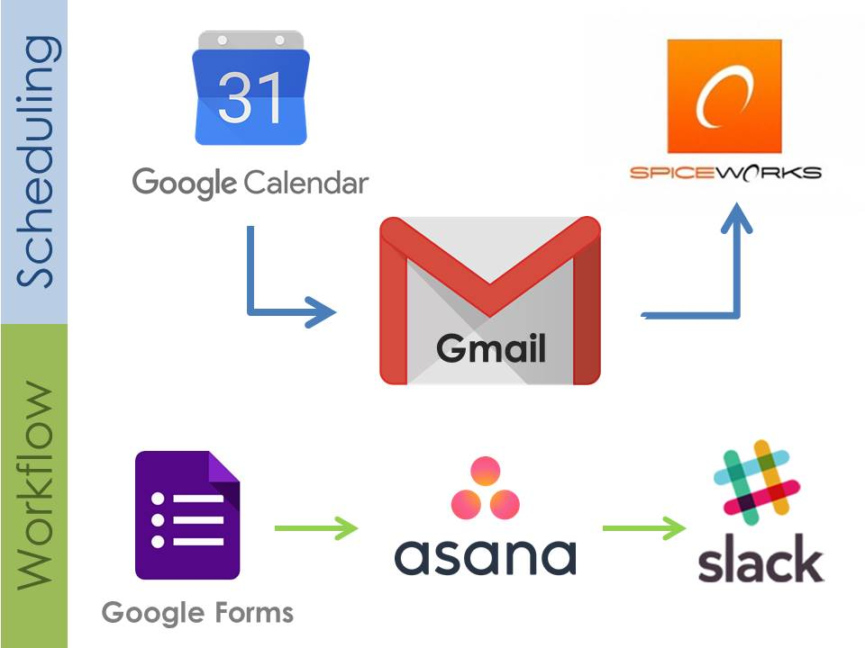

University of Texas at Austin | January - May 2017
Cross-Platform Integrations
Grading System
In the Spring 2017 semester, the iSchool IT Lab implemented the use of Spiceworks, an IT Ticketing system, for use in organizing and delegating grading on teams of teaching assistants. I served as the system administrator and manipulated functions within the tool to automate delegation, categorization, and due dates for assignments submitted by instructors.
I also solved a functionality gap by using Google Calendar to schedule recurring assignment grading events (for weekly discussions).
Each event prompted an email routed through Gmail to Spiceworks, which automatically created a ticket which was then routed to
appropriate TA.
The TA team was also responsible for re-creating and creating new content in INF 304D: Introduction to Information Studies. In order
to simplify the workflow process, I created an integration between Google Forms (team members could submit 'media requests'), Gmail
(requests were routed through a filter), Asana (a 'project' was created in this project management platform), and Slack (our lab communication board).
A form submission also prompted an email to Spiceworks, which created a ticket so TAs could log time spent on the media.Project Management